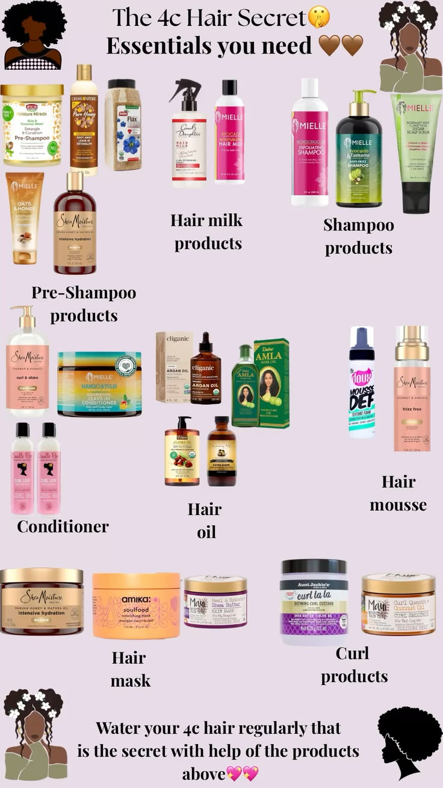
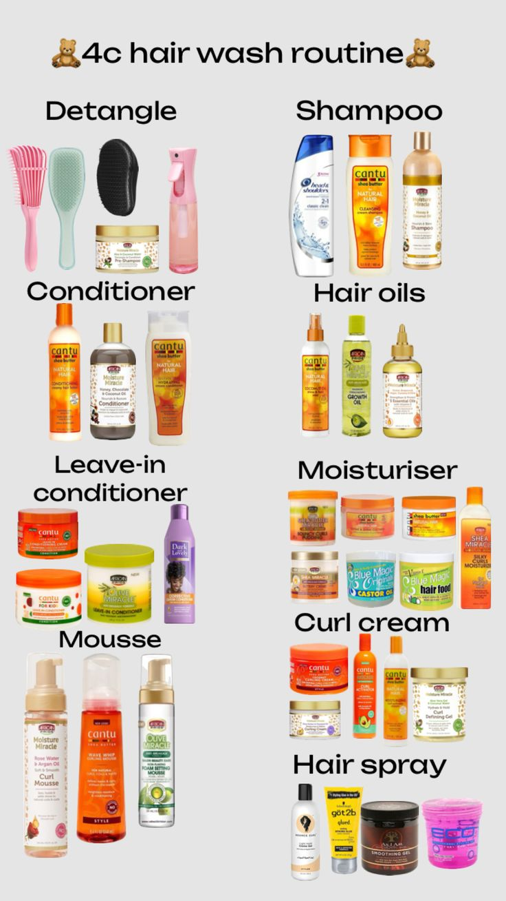
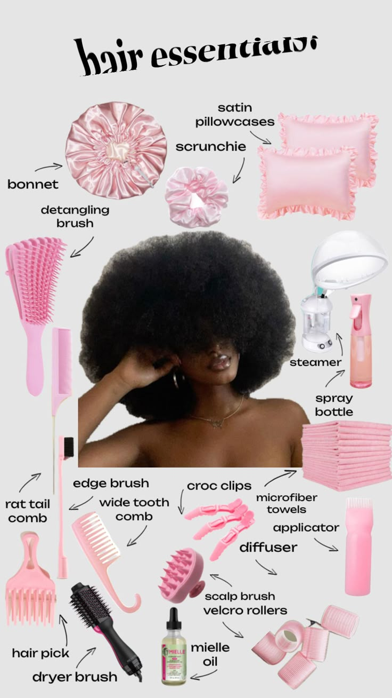
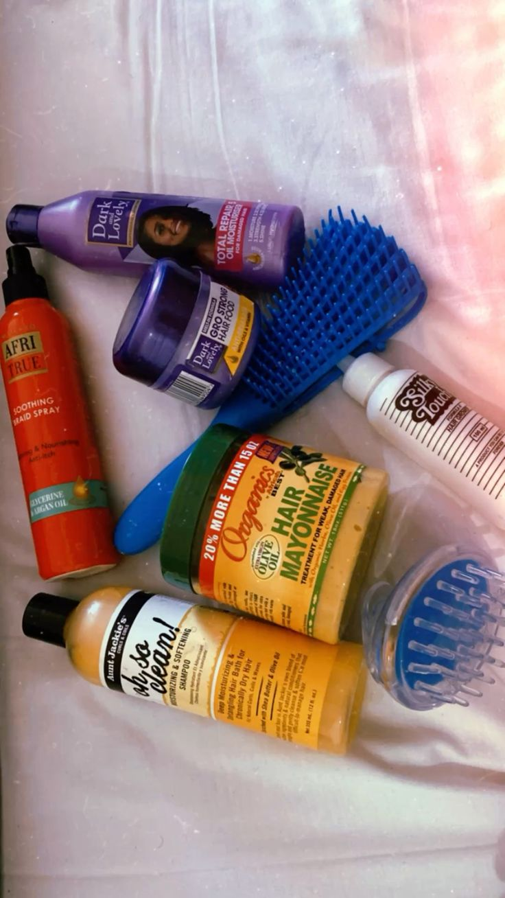
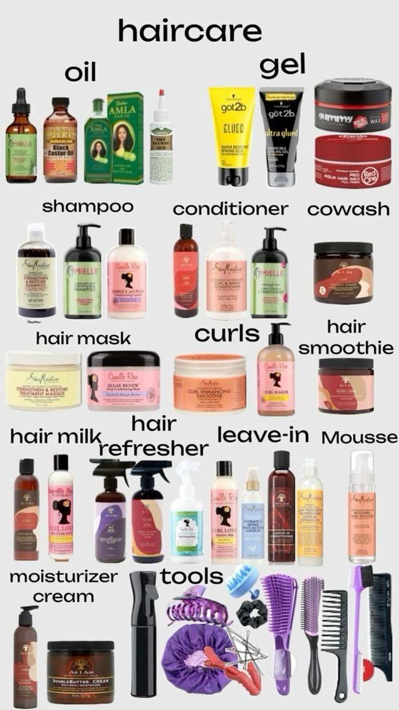

4c hair is a full time job.
i'm not joking. anyone who tells you otherwise is either lying or doesn't actually know the struggle of maintaining shrinkage and moisture in a city that alternates between dry dust and intense heat. i finally got my routine down to an actual science, though. the liquid, cream, oil method.
it takes an immense amount of patience. you can't rush it. you can't just slap some product on and hope for the best because 4c hair will immediately call your bluff and leave you looking wild by noon. you have to section it, apply the liquid to hydrate, follow up with the cream to soften, and then seal it all in with the oil. you have to actually pay attention to the texture under your fingers, ensuring every strand gets what it needs.





it's weirdly therapeutic, honestly. it's a forced slow-down in a week that usually runs at 2x speed. my brain is always jumping to the next feature branch or the next video script, but when i'm sitting there doing my hair, i can only do that one thing. it's a rare moment of intentional presence.
there's also something instructive about having a practice that rewards patience and punishes shortcuts. i've tried to rush it. it has never once worked. the hair knows. you either do it right or you start over. there's no acceptable middle ground.
shoutout to the products that actually do what the label says they do. you are the real mvps keeping me put together.
← Back to Blog